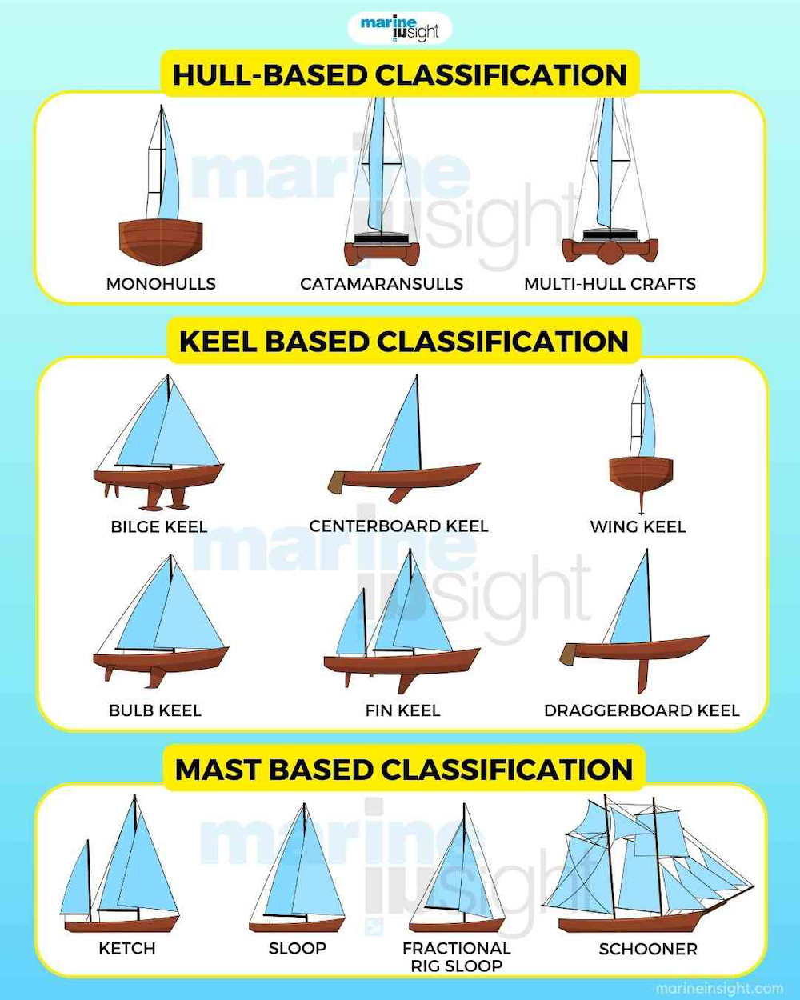
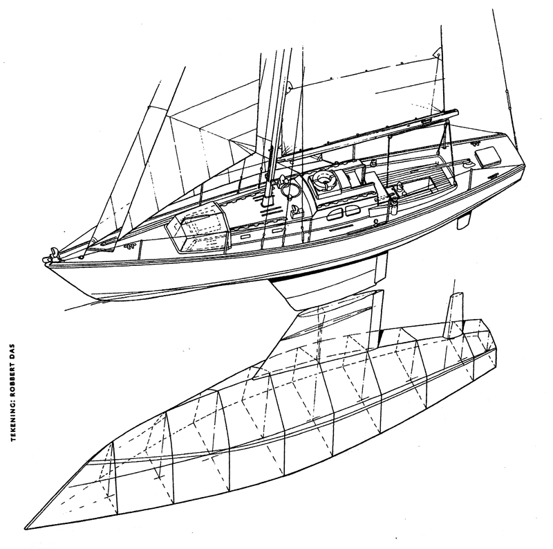
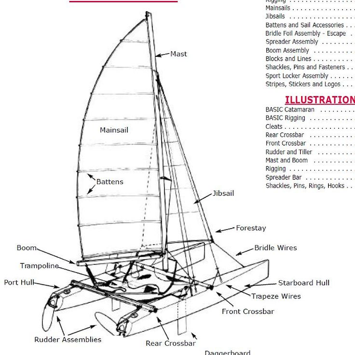
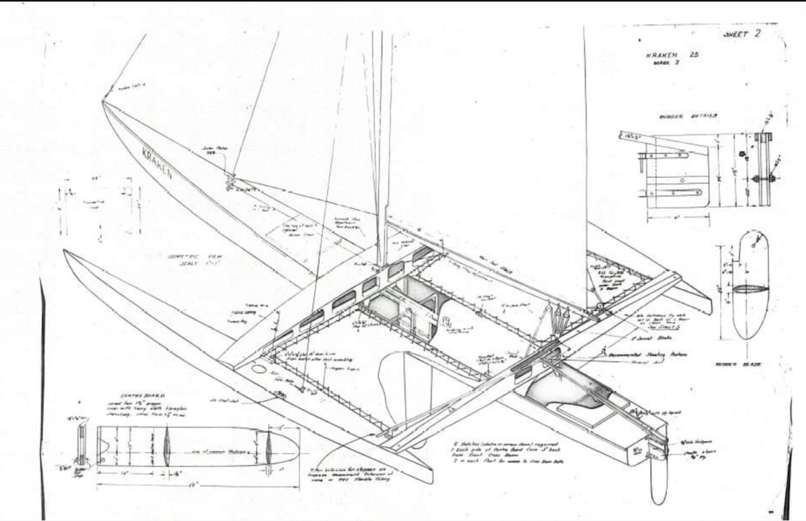
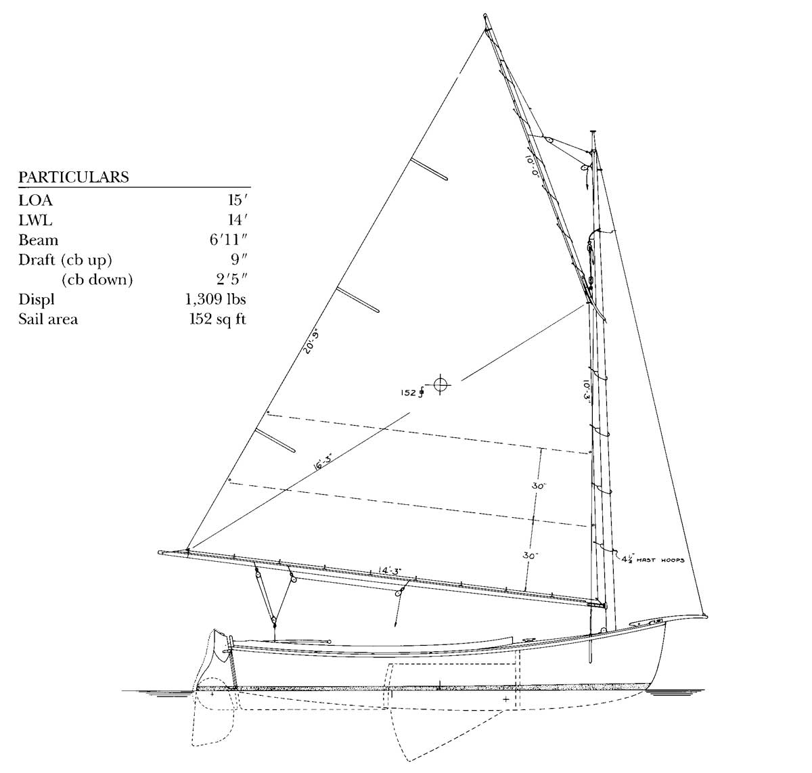
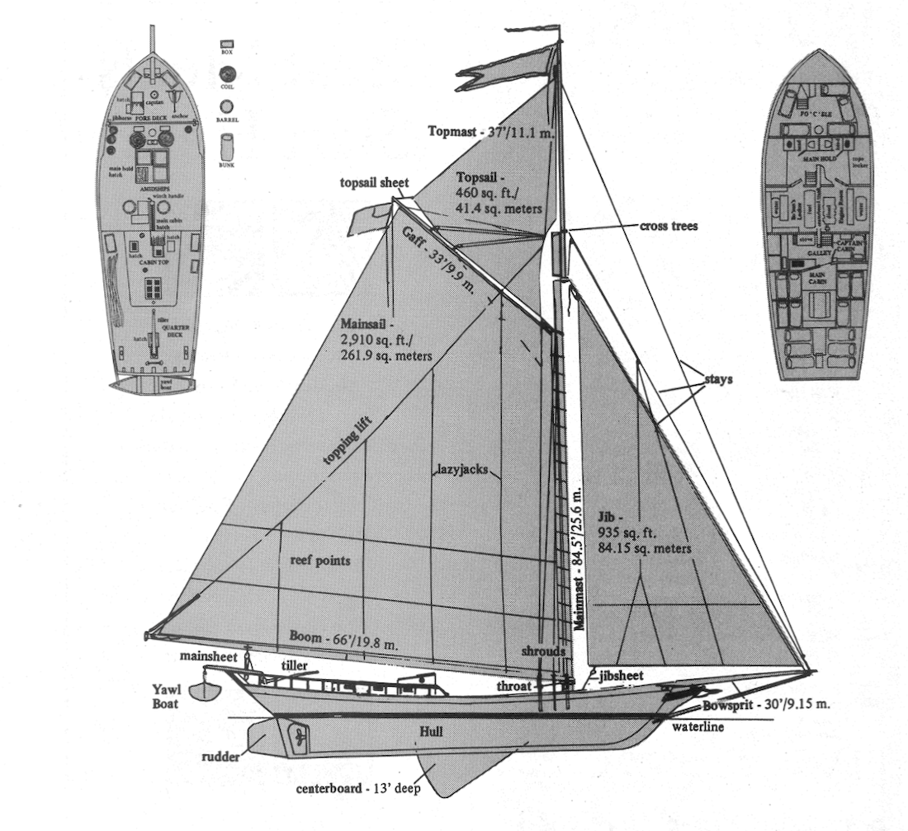
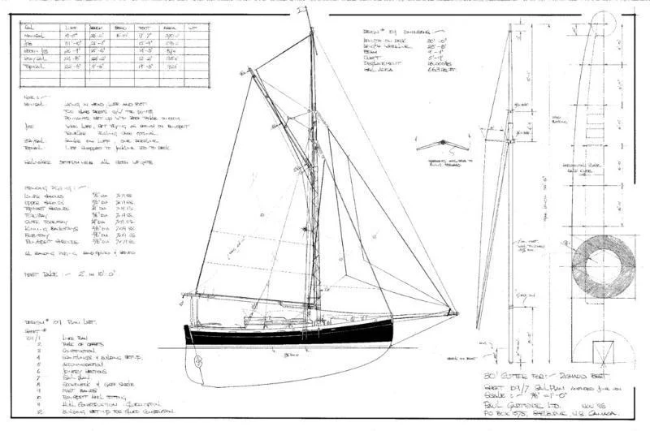

Sailboats can be understood and compared through two key features: their hull type and mast layout. Hull design—such as monohull, catamaran, or trimaran—affects stability, speed, and how a boat interacts with the water, while the mast configuration—like sloop, cutter, ketch, or schooner—determines how sails are arranged and handled. By examining these classifications, sailors can better understand why different boats perform the way they do and which designs are best suited for cruising, racing, or specific conditions. This page breaks down these fundamental categories to give you a clearer, more practical understanding of how sailboats are built and sailed.

Monohulls are the most traditional and widely recognized type of sailboat, identified by their single hull and deep keel beneath the waterline. This design provides strong directional stability and allows the boat to point efficiently into the wind, making it especially effective for upwind sailing. One of the key benefits of monohulls is their ability to heel, or lean under wind pressure, which can actually enhance performance and give sailors valuable feedback on sail trim and balance. Additionally, their simpler structure often makes them easier to maneuver in tight spaces and more forgiving in rough conditions, as the keel helps the boat recover from heavy waves. For many sailors, monohulls offer a balanced combination of performance, control, and a classic sailing experience.

A catamaran is easy to identify by its two parallel hulls connected by a wide deck, giving it a noticeably broader stance than traditional single-hull (monohull) boats. Instead of one deep keel, catamarans have two slimmer hulls that sit on the water’s surface, often with a trampoline or open deck space between them. This design provides several key benefits: exceptional stability, since the wide beam resists rolling; greater speed, due to reduced drag from the narrow hulls; and shallow draft, allowing access to areas that deeper boats can’t reach. Additionally, catamarans offer more usable deck and interior space, making them popular for cruising, leisure sailing, and even racing.

A trimaran can be identified by its three-hull configuration, consisting of a larger central hull flanked by two smaller outer hulls (called amas) connected by crossbeams. This distinctive layout gives the boat an even wider profile than a catamaran and a sleek, performance-oriented appearance. The design offers several advantages: excellent stability, as the outer hulls provide balance against tipping; high speed, since the main hull remains narrow and efficient in the water; and reduced drag compared to wider twin-hull designs. Trimarans are also known for their lightweight construction and responsiveness, making them especially popular in competitive sailing, while still offering enough deck space and stability for recreational use.

A catboat is easy to identify by its single mast placed far forward near the bow and its large, single sail, typically gaff-rigged, with no headsails. This gives the boat a simple, uncluttered appearance and a wide, beamy hull that often looks rounded and traditional—especially in classic New England designs. Catboats offer several benefits, including exceptional ease of handling, since there are fewer lines and sails to manage, making them ideal for beginners or relaxed sailing. Their wide beam provides great stability and shallow draft, allowing them to navigate coastal waters and harbors with ease. Additionally, the roomy cockpit and straightforward rig make catboats a favorite for leisurely day sailing and traditional-style cruising.

A sloop is one of the most common and easily recognizable sailboat types, identified by its single mast and two sails: a mainsail and a headsail (usually a jib or genoa) positioned in front of the mast. The mast is typically located slightly forward of center, creating a balanced and efficient sail plan. Sloops offer several advantages, including excellent versatility and performance, as the combination of sails allows for precise control in a wide range of wind conditions. They are also relatively simple to handle, especially with modern rigging systems, making them suitable for both beginners and experienced sailors. Additionally, sloops are widely used in cruising and racing due to their efficiency, maneuverability, and adaptability.

A cutter is identified by its single mast set slightly farther aft than a sloop and its two headsails—typically a jib on the forestay and a staysail on an inner forestay—along with a mainsail. This gives the rig a more complex appearance, with multiple sails forward of the mast. The cutter design offers several key benefits, especially for longer voyages: greater flexibility in sail combinations, allowing sailors to adapt easily to changing wind conditions; improved balance and control, particularly in heavy weather; and enhanced safety, since smaller, more manageable sails can be used instead of relying on one large headsail. Because of these advantages, cutters are especially popular for offshore cruising and passagemaking.